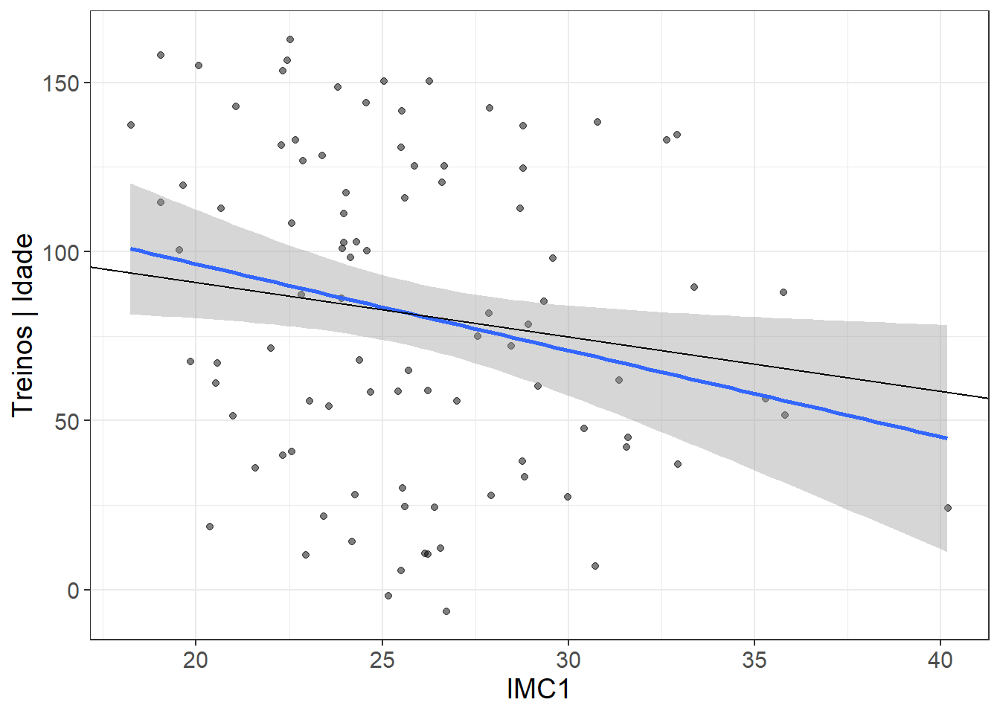
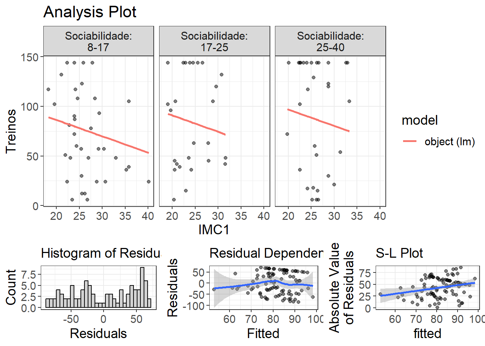

library(foreign)
library(tidyverse)
library(lavaan)
library(semPlot)
library(performance)
library(easystats)
library(semPlot)
library(semTools)
library(flexplot)
library(mediation)
library(kableExtra)10 Lista 8.1 - Moderação e Mediação
Veja o banco de dados DADOSPATH.sav. Nele temos as variáveis Idade, IMC, Sociabilidade (medida por um questionário) e número de treinos realizados em uma academia. Temos uma hipótese teórica de que SOCIABILIDADE é uma variável preditora (X) do número de TREINOS (Y) que a pessoa realiza na academia. No entanto, o IMC (M) é uma variável mediadora desse efeito, não apenas moderadora. Ou seja, a relação entre sociabilidade e treinos só aparece na presença do IMC ou quando ele é conhecido.
10.1 a) Modelo causal teórico
Exercício
Verifique esse modelo causal teórico e veja se ele faz sentido, utilizando um modelo SEM com mediação. Avalie os efeitos diretos e indiretos e decida se esse modelo teórico faz sentido, utilizando o AMOS e o Process.
Resolução do exercício foi baseada no vídeo “Simple Mediation using lavaan package of R” https://www.youtube.com/watch?v=nfQOCy9xMnk
original = read.spss("DADOS PATH.sav", to.data.frame=TRUE)
glimpse(original)Rows: 94
Columns: 4
$ Idade <dbl> 57, 41, 29, 26, 33, 37, 26, 44, 31, 36, 30, 55, 43, 27, …
$ IMC1 <dbl> 28.46122, 32.62609, 26.99050, 19.03602, 28.76650, 24.686…
$ Treinos <dbl> 108, 144, 48, 102, 123, 63, 39, 105, 6, 48, 144, 144, 11…
$ Sociabilidade <dbl> 14, 34, 17, 20, 26, 19, 15, 32, 27, 19, 28, 9, 30, 29, 1…modelo_1 = "Treinos ~ c_*Sociabilidade + b*IMC1
IMC1 ~ a*Sociabilidade
Indireto := a*b
Total_direto_C := a*b + c_"fit_1 = sem(modelo_1, original, se = "bootstrap", bootstrap = 500)#summary(fit_1) # parâmetros adicionais summary(fit_1, fit.measures = TRUE, standardized = TRUE, rsquare = TRUE)
kable(parameterEstimates(fit_1))| lhs | op | rhs | label | est | se | z | pvalue | ci.lower | ci.upper |
|---|---|---|---|---|---|---|---|---|---|
| Treinos | ~ | Sociabilidade | c_ | 0.6052243 | 0.6619768 | 0.9142682 | 0.3605759 | -0.6524603 | 1.8245324 |
| Treinos | ~ | IMC1 | b | -1.6497656 | 1.0185007 | -1.6197982 | 0.1052756 | -3.6551562 | 0.4350822 |
| IMC1 | ~ | Sociabilidade | a | 0.0190526 | 0.0507549 | 0.3753835 | 0.7073753 | -0.0861290 | 0.1130998 |
| Treinos | ~~ | Treinos | 2327.0247317 | 187.7869286 | 12.3918355 | 0.0000000 | 1884.6418875 | 2629.3007296 | |
| IMC1 | ~~ | IMC1 | 17.7329732 | 3.0046312 | 5.9018802 | 0.0000000 | 12.1538364 | 23.9097897 | |
| Sociabilidade | ~~ | Sociabilidade | 65.6008375 | 0.0000000 | NA | NA | 65.6008375 | 65.6008375 | |
| Indireto | := | a*b | Indireto | -0.0314322 | 0.0996909 | -0.3152970 | 0.7525362 | -0.2192393 | 0.2283743 |
| Total_direto_C | := | a*b+c_ | Total_direto_C | 0.5737921 | 0.6689293 | 0.8577768 | 0.3910157 | -0.7354611 | 1.7852540 |
Resultados
- Regressões:
O coeficiente estimado para a relação entre Sociabilidae e Treinos é 0.605, mas não é estatisticamente significativo (p = 0.360).
O coeficiente estimado para a relação entre IMC e Treinos é -1.650, indicando uma relação negativa. No entanto, esse coeficiente também não é estatisticamente significativo (p = 0.100).
O coeficiente estimado para a relação entre Sociabilidae e IMC é 0.019 e não é estatisticamente significativo (p = 0.693).
- Parâmetros Definidos:
O efeito indireto é estimado como -0.031, mas não é estatisticamente significativo (p = 0.717). Isso sugere que a variável IMC não medeia significativamente a relação entre Sociabilidae e Treinos.
O efeito direto da Sociabilidade no Treino é estimado como 0.574 e também não é estatisticamente significativo (p = 0.386).
Com base nos resultados, podemos concluir que o modelo teórico não se sustenta, pois não há evidência estatística significativa para sugerir relações entre as variáveis Sociabilidae , IMC e Treinos.
10.2 b) Mediação vs Regressões lineares
Exercício
Compare os dados encontrados com aqueles realizados por um conjunto de regressões lineares (OLS). Fazer esta análise de mediação por regressão linear e utilizando o AMOS+Process é a mesma coisa? Coloque também o diagrama gerado aqui.
Valor de “c”
soc_treinos = lm(Treinos ~ Sociabilidade, data = original) #valor de c
kable(summary(soc_treinos)$coef)| Estimate | Std. Error | t value | Pr(>|t|) | |
|---|---|---|---|---|
| (Intercept) | 69.4395522 | 14.1638541 | 4.9025888 | 0.0000041 |
| Sociabilidade | 0.5737921 | 0.6273496 | 0.9146289 | 0.3627775 |
Valor de a
soc_imc = lm(IMC1 ~ Sociabilidade, data = original)
kable(summary(soc_imc)$coef)| Estimate | Std. Error | t value | Pr(>|t|) | |
|---|---|---|---|---|
| (Intercept) | 25.3971491 | 1.2238100 | 20.7525264 | 0.0000000 |
| Sociabilidade | 0.0190526 | 0.0542054 | 0.3514884 | 0.7260257 |
valor de b e de c’
soc_E_imc_treinos = lm(Treinos ~ IMC1 + Sociabilidade, data = original)
kable(summary(soc_E_imc_treinos)$coef)| Estimate | Std. Error | t value | Pr(>|t|) | |
|---|---|---|---|---|
| (Intercept) | 111.3388945 | 33.5981763 | 3.3138374 | 0.0013220 |
| IMC1 | -1.6497656 | 1.2008507 | -1.3738307 | 0.1728690 |
| Sociabilidade | 0.6052243 | 0.6247647 | 0.9687235 | 0.3352508 |
Os resultados são diferentes. As mediações apenas por regressão linear não apresentam o resultado do efeito indireto, mostrado no resultado do exercício anterior
Diagrama do modelo
diagrama_1 <- semPaths(
object = fit_1,
what = "path",
whatLabels = "par",
style = "ram",
layout = "tree",
rotation = 2,
sizeMan = 7,
sizeLat = 7,
color = "lightgray",
edge.label.cex = 1.2,
label.cex = 1.3
)10.3 Modelo 2 (Opcional 1)
Refaça o modelo tendo a variável Idade como mediador.
modelo_2 = "Treinos ~ c_*Sociabilidade + b*Idade
Idade ~ a*Sociabilidade
Indireto := a*b
Total_direto_C := a*b + c_"fit_2 = sem(modelo_2, original, se = "bootstrap", bootstrap = 500)
kable(parameterEstimates(fit_2)) # parâmetros adicionais summary(fit_1, fit.measures = TRUE, standardized = TRUE, rsquare = TRUE) | lhs | op | rhs | label | est | se | z | pvalue | ci.lower | ci.upper |
|---|---|---|---|---|---|---|---|---|---|
| Treinos | ~ | Sociabilidade | c_ | 0.4852942 | 0.6196786 | 0.7831385 | 0.4335458 | -0.7090243 | 1.6900127 |
| Treinos | ~ | Idade | b | 1.5425565 | 0.4588149 | 3.3620452 | 0.0007737 | 0.6913514 | 2.4044144 |
| Idade | ~ | Sociabilidade | a | 0.0573709 | 0.1100893 | 0.5211310 | 0.6022755 | -0.1575502 | 0.2725941 |
| Treinos | ~~ | Treinos | 2179.2955768 | 194.4639552 | 11.2066813 | 0.0000000 | 1707.6722717 | 2479.7855236 | |
| Idade | ~~ | Idade | 82.3681677 | 10.5597227 | 7.8002207 | 0.0000000 | 61.5549212 | 102.4772562 | |
| Sociabilidade | ~~ | Sociabilidade | 65.6008375 | 0.0000000 | NA | NA | 65.6008375 | 65.6008375 | |
| Indireto | := | a*b | Indireto | 0.0884979 | 0.1735841 | 0.5098273 | 0.6101725 | -0.2660349 | 0.4446866 |
| Total_direto_C | := | a*b+c_ | Total_direto_C | 0.5737921 | 0.6808613 | 0.8427445 | 0.3993714 | -0.7934420 | 1.9182149 |
Resultados
Regressões:
A relação estimada entre
SociabilidadeeTreinosé 0.485, mas não é estatisticamente significativa (p = 0.384).A relação estimada entre
IdadeeTreinosé 1.543, indicando uma relação positiva e significativa (p = 0.001).A relação estimada entre
SociablddeIdadeé 0.057 e não é estatisticamente significativa (p = 0.592).
Parâmetros Definidos:
O efeito
Indiretoé estimado como 0.088, mas não é estatisticamente significativo (p = 0.605). Isso sugere que a variávelIdadenão medeia significativamente a relação entreSociabilidadeeTreinos.O efeito total direto da Sociabilidae nos Treinos é estimado como 0.574 e não é estatisticamente significativo (p = 0.345).
Os resultados sugerem que a variável Idade está significativamente relacionada à variável Treinos, enquanto a variável Sociabilidade não tem uma relação significativa com Treinos. O efeito indireto através de Idade não é estatisticamente significativo, e o efeito total direto também não é significativo.
Diagrama do modelo 2
diagrama_2 <- semPaths(
object = fit_2,
what = "path",
whatLabels = "par",
style = "ram",
layout = "tree",
rotation = 2,
sizeMan = 7,
sizeLat = 7,
color = "lightgray",
edge.label.cex = 1.2,
label.cex = 1.3
)
mediation_model_2 = lm(Idade ~ Sociabilidade, data = original)
kable(summary(mediation_model_2)$coef)| Estimate | Std. Error | t value | Pr(>|t|) | |
|---|---|---|---|---|
| (Intercept) | 32.8228531 | 2.6375635 | 12.4443843 | 0.0000000 |
| Sociabilidade | 0.0573709 | 0.1168237 | 0.4910896 | 0.6245325 |
# library(flexplot)
# visualize(mediation_model_2) análise gráfica do modelofull_model_2 = lm(Treinos ~ Idade + Sociabilidade, data = original)
kable(summary(full_model_2)$coef)| Estimate | Std. Error | t value | Pr(>|t|) | |
|---|---|---|---|---|
| (Intercept) | 18.8084463 | 22.3454098 | 0.8417141 | 0.4021546 |
| Idade | 1.5425565 | 0.5392097 | 2.8607731 | 0.0052418 |
| Sociabilidade | 0.4852942 | 0.6049941 | 0.8021469 | 0.4245578 |
#visualize(full_model_2) análise gráfica do modeloresults_2 = mediate(mediation_model_2, full_model_2,
treat = "Sociabilidade",
mediator = "Idade",
boot = TRUE,
sims = 500)
summary(results_2)
Causal Mediation Analysis
Nonparametric Bootstrap Confidence Intervals with the Percentile Method
Estimate 95% CI Lower 95% CI Upper p-value
ACME 0.0885 -0.2126 0.45 0.52
ADE 0.4853 -0.6804 1.70 0.37
Total Effect 0.5738 -0.6401 1.88 0.33
Prop. Mediated 0.1542 -1.7984 1.59 0.50
Sample Size Used: 94
Simulations: 500 mediate_plot(Treinos ~ Idade + Sociabilidade , data = original)10.4 Modelo 3 (Opcional 2)
Testando outros modelos, foi possível observar que o efeito do IMC sobre o treinamento é mediado pela Idade
modelo_3 = "Treinos ~ c_*IMC1 + b*Idade
Idade ~ a*IMC1
Indireto := a*b
Total_direto_C := a*b + c_"fit_3 = sem(modelo_3, original, se = "bootstrap", bootstrap = 500) #demora um tempo para executarkable(parameterEstimates(fit_3)) # parâmetros adicionais summary(fit_1, fit.measures = TRUE, standardized = TRUE, rsquare = TRUE)| lhs | op | rhs | label | est | se | z | pvalue | ci.lower | ci.upper |
|---|---|---|---|---|---|---|---|---|---|
| Treinos | ~ | IMC1 | c_ | -2.7781642 | 1.0067476 | -2.759544 | 0.0057882 | -4.6800358 | -0.6198768 |
| Treinos | ~ | Idade | b | 1.9275620 | 0.4583106 | 4.205798 | 0.0000260 | 0.9813260 | 2.7588243 |
| Idade | ~ | IMC1 | a | 0.6075027 | 0.2252141 | 2.697446 | 0.0069874 | 0.2357407 | 1.0753598 |
| Treinos | ~~ | Treinos | 2068.5298836 | 190.9705838 | 10.831668 | 0.0000000 | 1660.9183246 | 2429.8198497 | |
| Idade | ~~ | Idade | 76.0307760 | 9.8646493 | 7.707398 | 0.0000000 | 55.5284839 | 95.0898386 | |
| IMC1 | ~~ | IMC1 | 17.7567863 | 0.0000000 | NA | NA | 17.7567863 | 17.7567863 | |
| Indireto | := | a*b | Indireto | 1.1709992 | 0.5155848 | 2.271206 | 0.0231345 | 0.3149790 | 2.3125077 |
| Total_direto_C | := | a*b+c_ | Total_direto_C | -1.6071651 | 1.0825367 | -1.484629 | 0.1376422 | -3.6571736 | 0.6752811 |
Resultados
Regressões:
A relação estimada entre
IMC1(Índice de Massa Corporal) eTreinosé -2.778, indicando uma relação negativa e significativa (p = 0.006).A relação estimada entre
IdadeeTreinosé 1.928, indicando uma relação positiva e significativa (p = 0.000).A relação estimada entre
IMCeIdadeé 0.608 e é estatisticamente significativa (p = 0.005).
Parâmetros Definidos:
O efeito
Indiretoé estimado como 1.171 e é estatisticamente significativo (p = 0.030). Isso sugere que a variávelIdademedeia significativamente a relação entreIMCeTreinos.O efeito total direto de IMC nos Treinos é estimado como -1.607, mas não é estatisticamente significativo (p = 0.114).
Os resultados indicam que a variável IMC está significativamente relacionada negativamente à variável Treinos. A variável Idade atua como mediadora nessa relação. O efeito indireto é estimado como 1.171 (p = 0.030), indicando que a inclusão de Idade no modelo altera a relação entre IMC1 e Treinos, tornando-a mais negativa do que a relação direta.
10.5 Diagrama do modelo 3
diagrama_3 <- semPaths(
object = fit_3,
what = "path",
whatLabels = "par",
style = "ram",
layout = "tree",
rotation = 2,
sizeMan = 7,
sizeLat = 7,
color = "lightgray",
edge.label.cex = 1.2,
label.cex = 1.3
)mediation_model_3 = lm(Idade ~ IMC1, data = original)
summary(mediation_model_3)$coef Estimate Std. Error t value Pr(>|t|)
(Intercept) 18.3591515 5.639405 3.255512 0.001584908
IMC1 0.6075027 0.215734 2.815980 0.005949584visualize(mediation_model_3) full_model_3 = lm(Treinos ~ Idade + IMC1, data = original)
summary(full_model_3)$coef Estimate Std. Error t value Pr(>|t|)
(Intercept) 87.606237 31.2333809 2.804891 0.0061538896
Idade 1.927562 0.5467836 3.525274 0.0006645242
IMC1 -2.778164 1.1791838 -2.356006 0.0206193649visualize(full_model_3)results_3 = mediate(mediation_model_3, full_model_3,
treat = "IMC1",
mediator = "Idade",
boot = TRUE,
sims = 500)
summary(results_3)
Causal Mediation Analysis
Nonparametric Bootstrap Confidence Intervals with the Percentile Method
Estimate 95% CI Lower 95% CI Upper p-value
ACME 1.171 0.339 2.43 <2e-16 ***
ADE -2.778 -4.585 -0.62 0.024 *
Total Effect -1.607 -3.441 0.57 0.156
Prop. Mediated -0.729 -11.591 7.21 0.156
---
Signif. codes: 0 '***' 0.001 '**' 0.01 '*' 0.05 '.' 0.1 ' ' 1
Sample Size Used: 94
Simulations: 500 mediate_plot(Treinos ~ Idade + IMC1 , data = original)
10.6 Lista 8.1 resolvida no SPSS
10.7 Extras!
Outro tipo de resolução baseada no vídeo do Dustin Fife (How to do a mediation analysis in R…with visuals!)
# Mediação com visualização
library(mediation)
library(flexplot)
mediation_model = lm(IMC1 ~ Sociabilidade, data = original)
summary(mediation_model)
Call:
lm(formula = IMC1 ~ Sociabilidade, data = original)
Residuals:
Min 1Q Median 3Q Max
-7.3645 -2.8931 -0.4598 2.7881 14.5354
Coefficients:
Estimate Std. Error t value Pr(>|t|)
(Intercept) 25.39715 1.22381 20.753 <2e-16 ***
Sociabilidade 0.01905 0.05421 0.351 0.726
---
Signif. codes: 0 '***' 0.001 '**' 0.01 '*' 0.05 '.' 0.1 ' ' 1
Residual standard error: 4.257 on 92 degrees of freedom
Multiple R-squared: 0.001341, Adjusted R-squared: -0.009514
F-statistic: 0.1235 on 1 and 92 DF, p-value: 0.726visualize(mediation_model, plot = "model")full_model = lm(Treinos ~ IMC1 + Sociabilidade, data = original)
summary(full_model)
Call:
lm(formula = Treinos ~ IMC1 + Sociabilidade, data = original)
Residuals:
Min 1Q Median 3Q Max
-85.683 -42.165 2.807 47.623 69.596
Coefficients:
Estimate Std. Error t value Pr(>|t|)
(Intercept) 111.3389 33.5982 3.314 0.00132 **
IMC1 -1.6498 1.2009 -1.374 0.17287
Sociabilidade 0.6052 0.6248 0.969 0.33525
---
Signif. codes: 0 '***' 0.001 '**' 0.01 '*' 0.05 '.' 0.1 ' ' 1
Residual standard error: 49.03 on 91 degrees of freedom
Multiple R-squared: 0.02915, Adjusted R-squared: 0.00781
F-statistic: 1.366 on 2 and 91 DF, p-value: 0.2603visualize(full_model)
results = mediate(mediation_model, full_model,
treat = "Sociabilidade",
mediator = "IMC1",
boot = TRUE,
sims = 500)summary(results)
Causal Mediation Analysis
Nonparametric Bootstrap Confidence Intervals with the Percentile Method
Estimate 95% CI Lower 95% CI Upper p-value
ACME -0.0314 -0.1976 0.17 0.78
ADE 0.6052 -0.6669 1.95 0.29
Total Effect 0.5738 -0.6201 1.89 0.30
Prop. Mediated -0.0548 -1.3478 1.26 0.87
Sample Size Used: 94
Simulations: 500 mediate_plot(Treinos ~ IMC1 + Sociabilidade, data = original) # Ordem em que aparece as variáveis é muito importante. A última variável será sempre a variável DEPENDENTE (X). Todas as outras que vierem antes dela, serão tratadas como MEDIADORAS (no caso IMC1) 10.8 Referências
10.9 Versões dos pacotes
report(sessionInfo())Analyses were conducted using the R Statistical language (version 4.3.1; R Core
Team, 2023) on Windows 11 x64 (build 22621), using the packages Matrix (version
1.6.0; Bates D et al., 2023), effectsize (version 0.8.6; Ben-Shachar MS et al.,
2020), semPlot (version 1.1.6; Epskamp S, 2022), flexplot (version 0.20.5; Fife
D, 2024), mvtnorm (version 1.2.3; Genz A, Bretz F, 2009), lubridate (version
1.9.3; Grolemund G, Wickham H, 2011), semTools (version 0.5.6; Jorgensen TD et
al., 2022), parameters (version 0.21.3; Lüdecke D et al., 2020), performance
(version 0.10.8; Lüdecke D et al., 2021), easystats (version 0.6.0; Lüdecke D
et al., 2022), see (version 0.8.1; Lüdecke D et al., 2021), insight (version
0.19.6; Lüdecke D et al., 2019), bayestestR (version 0.13.1; Makowski D et al.,
2019), modelbased (version 0.8.6; Makowski D et al., 2020), report (version
0.5.7; Makowski D et al., 2023), correlation (version 0.8.4; Makowski D et al.,
2022), tibble (version 3.2.1; Müller K, Wickham H, 2023), datawizard (version
0.9.0; Patil I et al., 2022), foreign (version 0.8.85; R Core Team, 2023),
lavaan (version 0.6.16; Rosseel Y, 2012), mediation (version 4.5.0; Tingley D
et al., 2014), MASS (version 7.3.60; Venables WN, Ripley BD, 2002), ggplot2
(version 3.4.4; Wickham H, 2016), forcats (version 1.0.0; Wickham H, 2023),
stringr (version 1.5.1; Wickham H, 2023), tidyverse (version 2.0.0; Wickham H
et al., 2019), dplyr (version 1.1.3; Wickham H et al., 2023), purrr (version
1.0.2; Wickham H, Henry L, 2023), readr (version 2.1.4; Wickham H et al.,
2023), tidyr (version 1.3.0; Wickham H et al., 2023), sandwich (version 3.1.0;
Zeileis A et al., 2020) and kableExtra (version 1.3.4; Zhu H, 2021).
References
----------
- Bates D, Maechler M, Jagan M (2023). _Matrix: Sparse and Dense Matrix Classes
and Methods_. R package version 1.6-0,
<https://CRAN.R-project.org/package=Matrix>.
- Ben-Shachar MS, Lüdecke D, Makowski D (2020). "effectsize: Estimation of
Effect Size Indices and Standardized Parameters." _Journal of Open Source
Software_, *5*(56), 2815. doi:10.21105/joss.02815
<https://doi.org/10.21105/joss.02815>, <https://doi.org/10.21105/joss.02815>.
- Epskamp S (2022). _semPlot: Path Diagrams and Visual Analysis of Various SEM
Packages' Output_. R package version 1.1.6,
<https://CRAN.R-project.org/package=semPlot>.
- Fife D (2024). _flexplot: Graphically Based Data Analysis Using 'flexplot'_.
R package version 0.20.5.
- Genz A, Bretz F (2009). _Computation of Multivariate Normal and t
Probabilities_, series Lecture Notes in Statistics. Springer-Verlag,
Heidelberg. ISBN 978-3-642-01688-2.
- Grolemund G, Wickham H (2011). "Dates and Times Made Easy with lubridate."
_Journal of Statistical Software_, *40*(3), 1-25.
<https://www.jstatsoft.org/v40/i03/>.
- Jorgensen TD, Pornprasertmanit S, Schoemann AM, Rosseel Y (2022).
_\texttt{semTools}: Useful tools for structural equation modeling_. R package
version 0.5-6, <https://CRAN.R-project.org/package=semTools>.
- Lüdecke D, Ben-Shachar M, Patil I, Makowski D (2020). "Extracting, Computing
and Exploring the Parameters of Statistical Models using R." _Journal of Open
Source Software_, *5*(53), 2445. doi:10.21105/joss.02445
<https://doi.org/10.21105/joss.02445>.
- Lüdecke D, Ben-Shachar M, Patil I, Waggoner P, Makowski D (2021).
"performance: An R Package for Assessment, Comparison and Testing of
Statistical Models." _Journal of Open Source Software_, *6*(60), 3139.
doi:10.21105/joss.03139 <https://doi.org/10.21105/joss.03139>.
- Lüdecke D, Ben-Shachar M, Patil I, Wiernik B, Makowski D (2022). "easystats:
Framework for Easy Statistical Modeling, Visualization, and Reporting." _CRAN_.
R package, <https://easystats.github.io/easystats/>.
- Lüdecke D, Patil I, Ben-Shachar M, Wiernik B, Waggoner P, Makowski D (2021).
"see: An R Package for Visualizing Statistical Models." _Journal of Open Source
Software_, *6*(64), 3393. doi:10.21105/joss.03393
<https://doi.org/10.21105/joss.03393>.
- Lüdecke D, Waggoner P, Makowski D (2019). "insight: A Unified Interface to
Access Information from Model Objects in R." _Journal of Open Source Software_,
*4*(38), 1412. doi:10.21105/joss.01412 <https://doi.org/10.21105/joss.01412>.
- Makowski D, Ben-Shachar M, Lüdecke D (2019). "bayestestR: Describing Effects
and their Uncertainty, Existence and Significance within the Bayesian
Framework." _Journal of Open Source Software_, *4*(40), 1541.
doi:10.21105/joss.01541 <https://doi.org/10.21105/joss.01541>,
<https://joss.theoj.org/papers/10.21105/joss.01541>.
- Makowski D, Ben-Shachar M, Patil I, Lüdecke D (2020). "Estimation of
Model-Based Predictions, Contrasts and Means." _CRAN_.
<https://github.com/easystats/modelbased>.
- Makowski D, Lüdecke D, Patil I, Thériault R, Ben-Shachar M, Wiernik B (2023).
"Automated Results Reporting as a Practical Tool to Improve Reproducibility and
Methodological Best Practices Adoption." _CRAN_.
<https://easystats.github.io/report/>.
- Makowski D, Wiernik B, Patil I, Lüdecke D, Ben-Shachar M (2022).
"correlation: Methods for Correlation Analysis." Version 0.8.3,
<https://CRAN.R-project.org/package=correlation>. Makowski D, Ben-Shachar M,
Patil I, Lüdecke D (2020). "Methods and Algorithms for Correlation Analysis in
R." _Journal of Open Source Software_, *5*(51), 2306. doi:10.21105/joss.02306
<https://doi.org/10.21105/joss.02306>,
<https://joss.theoj.org/papers/10.21105/joss.02306>.
- Müller K, Wickham H (2023). _tibble: Simple Data Frames_. R package version
3.2.1, <https://CRAN.R-project.org/package=tibble>.
- Patil I, Makowski D, Ben-Shachar M, Wiernik B, Bacher E, Lüdecke D (2022).
"datawizard: An R Package for Easy Data Preparation and Statistical
Transformations." _Journal of Open Source Software_, *7*(78), 4684.
doi:10.21105/joss.04684 <https://doi.org/10.21105/joss.04684>.
- R Core Team (2023). _foreign: Read Data Stored by 'Minitab', 'S', 'SAS',
'SPSS', 'Stata', 'Systat', 'Weka', 'dBase', ..._. R package version 0.8-85,
<https://CRAN.R-project.org/package=foreign>.
- R Core Team (2023). _R: A Language and Environment for Statistical
Computing_. R Foundation for Statistical Computing, Vienna, Austria.
<https://www.R-project.org/>.
- Rosseel Y (2012). "lavaan: An R Package for Structural Equation Modeling."
_Journal of Statistical Software_, *48*(2), 1-36. doi:10.18637/jss.v048.i02
<https://doi.org/10.18637/jss.v048.i02>.
- Tingley D, Yamamoto T, Hirose K, Keele L, Imai K (2014). "mediation: R
Package for Causal Mediation Analysis." _Journal of Statistical Software_,
*59*(5), 1-38. <http://www.jstatsoft.org/v59/i05/>. Imai K, Keele L, Yamamoto T
(2010). "Identification, Inference, and Sensitivity Analysis for Causal
Mediation Effects." _Statistical Science_, *25*(1), 51-71.
<http://imai.princeton.edu/research/mediation.html>. Imai K, Keele L, Tingley D
(2010). "A General Approach to Causal Mediation Analysis." _Psychological
Methods_, *15*(4), 309-334.
<http://imai.princeton.edu/research/BaronKenny.html>. Imai K, Keele L, Tingley
D, Yamamoto T (2011). "Unpacking the Black Box of Causality: Learning about
Causal Mechanisms from Experimental and Observational Studies." _American
Political Science Review_, *105*(4), 765-789.
<http://imai.princeton.edu/research/mediationP.html>. Imai K, Yamamoto T
(2013). "Identification and Sensitivity Analysis for Multiple Causal
Mechanisms: Revisiting Evidence from Framing Experiments." _Political
Analysis_, *21*(2), 141-171. <http://imai.princeton.edu/research/medsens.html>.
Imai K, Keele L, Tingley D, Yamamoto T (2010). "Causal Mediation Analysis Using
R." In Vinod HD (ed.), _Advances in Social Science Research Using R_.
Springer-Verlag, New York.
- Venables WN, Ripley BD (2002). _Modern Applied Statistics with S_, Fourth
edition. Springer, New York. ISBN 0-387-95457-0,
<https://www.stats.ox.ac.uk/pub/MASS4/>.
- Wickham H (2016). _ggplot2: Elegant Graphics for Data Analysis_.
Springer-Verlag New York. ISBN 978-3-319-24277-4,
<https://ggplot2.tidyverse.org>.
- Wickham H (2023). _forcats: Tools for Working with Categorical Variables
(Factors)_. R package version 1.0.0,
<https://CRAN.R-project.org/package=forcats>.
- Wickham H (2023). _stringr: Simple, Consistent Wrappers for Common String
Operations_. R package version 1.5.1,
<https://CRAN.R-project.org/package=stringr>.
- Wickham H, Averick M, Bryan J, Chang W, McGowan LD, François R, Grolemund G,
Hayes A, Henry L, Hester J, Kuhn M, Pedersen TL, Miller E, Bache SM, Müller K,
Ooms J, Robinson D, Seidel DP, Spinu V, Takahashi K, Vaughan D, Wilke C, Woo K,
Yutani H (2019). "Welcome to the tidyverse." _Journal of Open Source Software_,
*4*(43), 1686. doi:10.21105/joss.01686 <https://doi.org/10.21105/joss.01686>.
- Wickham H, François R, Henry L, Müller K, Vaughan D (2023). _dplyr: A Grammar
of Data Manipulation_. R package version 1.1.3,
<https://CRAN.R-project.org/package=dplyr>.
- Wickham H, Henry L (2023). _purrr: Functional Programming Tools_. R package
version 1.0.2, <https://CRAN.R-project.org/package=purrr>.
- Wickham H, Hester J, Bryan J (2023). _readr: Read Rectangular Text Data_. R
package version 2.1.4, <https://CRAN.R-project.org/package=readr>.
- Wickham H, Vaughan D, Girlich M (2023). _tidyr: Tidy Messy Data_. R package
version 1.3.0, <https://CRAN.R-project.org/package=tidyr>.
- Zeileis A, Köll S, Graham N (2020). "Various Versatile Variances: An
Object-Oriented Implementation of Clustered Covariances in R." _Journal of
Statistical Software_, *95*(1), 1-36. doi:10.18637/jss.v095.i01
<https://doi.org/10.18637/jss.v095.i01>. Zeileis A (2004). "Econometric
Computing with HC and HAC Covariance Matrix Estimators." _Journal of
Statistical Software_, *11*(10), 1-17. doi:10.18637/jss.v011.i10
<https://doi.org/10.18637/jss.v011.i10>. Zeileis A (2006). "Object-Oriented
Computation of Sandwich Estimators." _Journal of Statistical Software_,
*16*(9), 1-16. doi:10.18637/jss.v016.i09
<https://doi.org/10.18637/jss.v016.i09>.
- Zhu H (2021). _kableExtra: Construct Complex Table with 'kable' and Pipe
Syntax_. R package version 1.3.4,
<https://CRAN.R-project.org/package=kableExtra>.